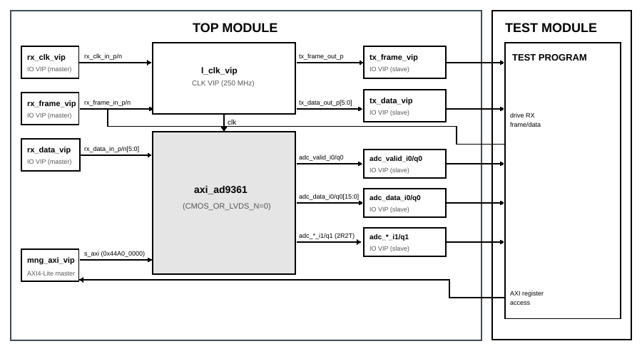

AXI AD9361 LVDS Interface
Overview
The purpose of this testbench is to validate the LVDS physical interface of the
library/axi_ad9361 IP core, specifically the
axi_ad9361_lvds_if submodule implemented in
library/axi_ad9361/xilinx/axi_ad9361_lvds_if.v.
The primary focus is the frame error detection logic, which checks incoming
DDR frame signal patterns against the four valid AD9361 frame transitions using
an explicit whitelist with case-equality (===) operators. Beyond frame
checking, the testbench validates the RX data delineation state machine in both
2R2T and 1R1T modes, and the TX serialization path.
Block design
The block design instantiates the axi_ad9361 IP (which wraps
axi_ad9361_lvds_if internally) connected to a set of io_vip instances
that act as signal drivers (master mode) and monitors (slave mode) for all LVDS
pins.
Block diagram
{kind=link}

The block design contains the following main components:
dut:axi_ad9361IP, configured for LVDS operationl_clk_vip: 250 MHz clock VIP driving the DUTclkport directly (USE_SSI_CLK=0bypasses theIBUFGDS/BUFGclock primitives)rx_clk_vip/rx_frame_vip/rx_data_vip: masterio_vipinstances driving the RX LVDS clock, frame and data pinsrx_clk_inv/rx_frame_inv/rx_data_inv:util_vector_logic NOTgates generating the differential N-side complement required byIBUFDStx_frame_vip/tx_data_vip: slaveio_vipinstances monitoring the TX LVDS outputsadc_valid_i0_vip/adc_data_i0_vip(and q0, i1, q1 variants): slaveio_vipinstances monitoring the ADC output ports at the DMA side
All io_vip clocks are connected to l_clk_vip/clk_out so that driving
and sampling are synchronous to the DUT’s DDR data clock.
The test programs access each io_vip interface through an io_vip_if_base
handle assigned at startup, and communicate with the DUT register interface
through the adc_api class using the base address defined in the block design
via adi_sim_add_define.
Configuration parameters and modes
The following parameters of this project can be configured:
MODE_1R1T: selects between 2R2T and 1R1T operation; Options: 0 - 2R2T (two receiver, two transmitter), 1 - 1R1T (single receiver, single transmitter)
The following DUT parameters are fixed across all configurations:
Parameter |
Value |
Reason |
|---|---|---|
|
0 |
Select LVDS interface path |
|
0 |
Bypass IBUFGDS/BUFG; clock driven by VIP |
|
0 |
Maps to |
|
0 |
Disable IDELAYCTRL (not needed for simulation) |
Configuration files
The following configuration files are available:
Configuration mode |
MODE_1R1T |
|---|---|
cfg_2r2t |
0 |
cfg_1r1t |
1 |
Tests
The following test program files are available:
Test program |
Usage |
|---|---|
test_program |
Functional pass/fail tests: frame error detection, RX delineation, TX frame signal. |
frame_sweep |
Exhaustive frame pattern sweep for waveform inspection. Drives all valid and invalid patterns; no assertions. |
Available configurations & tests combinations
Test \ Config |
cfg_2r2t |
cfg_1r1t |
|---|---|---|
test_program |
✓ |
✓ |
frame_sweep |
✓ |
✓ |
Active tests per configuration:
cfg_2r2t+test_program: Test 1 (valid patterns), Test 2 (glitch patterns), Test 3 (2R2T delineation), Test 5 (TX frame signal)cfg_1r1t+test_program: Test 1 (valid patterns), Test 2 (glitch patterns), Test 4 (1R1T delineation)Both configs +
frame_sweep: Section 1 (steady-state patterns), Section 2 (mode-specific burst), Section 3 (glitch patterns)
Clock scheme
A single 250 MHz clock VIP (l_clk_vip) drives all clocked elements:
DUT
clkport (the SSI/DDR data clock, normally sourced from the AD9361 viaIBUFGDS+BUFG; bypassed here byUSE_SSI_CLK=0)All
io_vipinstances (RX driver, TX monitor, ADC output monitors)
The test harness provides sys_cpu_clk (100 MHz) for the AXI-Lite register
interface, independently of the 250 MHz data clock.
CPU/Memory interconnects addresses
Instance |
Address |
|---|---|
axi_intc |
0x4120_0000 |
dut (axi_ad9361) |
0x44A0_0000 |
ddr_axi_vip |
0x8000_0000 |
Key register offsets within the DUT (byte addresses relative to
0x44A0_0000):
Building the testbench
The testbench is built upon ADI’s generic HDL reference design framework. ADI does not distribute compiled files of these projects so they must be built from the sources available here and here, with the specified hierarchy described Set up the Testbenches repository. To get the source you must clone the HDL repository, and then build the project as follows:
Note
The axi_ad9361 IP must be built in the HDL library before running the
testbench:
user@analog:~$
cd $ADI_HDL_DIR/library/axi_ad9361
user@analog:~/$ADI_HDL_DIR/library/axi_ad9361$
make xilinx
Linux/Cygwin/WSL
Example 1
Building and simulating all configurations and test combinations.
user@analog:~$
cd testbenches/ip/axi_ad9361_lvds
user@analog:~/testbenches/ip/axi_ad9361_lvds$
ADI_HDL_DIR=/path/to/hdl ADI_TB_DIR=/path/to/testbenches make
Example 2
Building and simulating the testbench using the Vivado GUI. This command will launch Vivado, run the simulation and display the waveforms.
user@analog:~$
cd testbenches/ip/axi_ad9361_lvds
user@analog:~/testbenches/ip/axi_ad9361_lvds$
make MODE=gui CFG=cfg_2r2t TST=frame_sweep
Example 3
Build a particular combination of test and configuration, using batch mode.
user@analog:~$
cd testbenches/ip/axi_ad9361_lvds
user@analog:~/testbenches/ip/axi_ad9361_lvds$
make CFG=cfg_2r2t TST=test_program
Example 4
Run all tests for a single configuration.
user@analog:~$
cd testbenches/ip/axi_ad9361_lvds
user@analog:~/testbenches/ip/axi_ad9361_lvds$
make cfg_1r1t
The built project can be found in the runs folder, where each configuration
specific build has its own folder named after the configuration file’s name.
Example: if the following command was run for a single configuration in the
clean folder (no runs folder available):
make CFG=cfg_2r2t
Then the subfolder under runs name will be:
cfg_2r2t
After the Vivado project has been built once, re-running the simulation after
only .sv test file changes does not require rebuilding the project:
user@analog:~$
cd runs/cfg_2r2t/cfg_2r2t.sim/sim_1/behav/xsim
user@analog:~/runs/cfg_2r2t/cfg_2r2t.sim/sim_1/behav/xsim$
source compile.sh && source elaborate.sh && source simulate.sh
Test stimulus
Both test programs share two helper tasks defined in their respective program blocks:
drive_ddr_cycle/drive_cycle: drives one complete DDR clock cycle onrx_frame_in_pandrx_data_in_ppoll_valid: pollsadc_valid_i0on every posedge for up to 20–30 cycles and capturesadc_data_i0at the cycle the 1-cycle pulse is seen
Note
The adc_valid_i0 signal is a single-cycle pulse that arrives exactly
8 posedges after the delineation trigger in lvds_if (1 flop in
lvds_if + 1 in ad_datafmt + 3 in ad_dcfilter + 2 in
ad_iqcor + 1 in axi_ad9361). A one-shot read after a fixed delay
will always miss it; poll_valid is required.
test_program
The test program is structured into the following tests:
Environment bringup
Create and start the test harness environment
Start the 250 MHz L_CLK
Assert and release system reset
Initialize all master
io_vipoutputs to 0Write 1 to
up_resetn(0x44A00040) to release the ADC from internal reset; without this,up_xfer_statusis held in reset andadc_statusnever propagates to the AXI registerWait 200
l_clkposedges for control and status CDCs to settleDisable IQ correction, DC filter and data format on all four channels so
adc_data_i0/q0/i1/q1reflect raw 12-bit samples
Test 1 — Valid frame patterns
Drives each of the four valid {rx_frame_s, rx_frame} patterns and reads
adc_status via AXI after waiting 200 cycles for CDC settle.
Pattern driven |
Meaning |
Expected |
|---|---|---|
|
Frame stays high — MSB slot |
1 |
|
Frame just rose — start of MSB |
1 |
|
Frame stays low — LSB slot |
1 |
|
Frame just fell — start of LSB |
1 |
Test 2 — Invalid frame patterns (glitch detection)
Drives the two even-XOR-parity patterns that the previous XOR-reduction
implementation would have silently passed. Verifies that adc_status is
deasserted (frame error detected).
Pattern driven |
Meaning |
Expected |
|---|---|---|
|
Frame toggles at 2× rate — impossible |
0 |
|
Frame toggles at 2× rate (inverted) |
0 |
Test 3 — 2R2T RX data delineation (cfg_2r2t only)
Drives a valid 2R2T frame sequence and checks that the delineation FSM asserts
adc_valid_i0 and produces a non-zero adc_data_i0.
8 idle cycles:
frame=0000Cycle A (
frame=1111):data_p=0x15,data_n=0x2A— MSB slot, stored intoadc_data_p[23:0]Cycle B (
frame=0000):data_p=0x0F,data_n=0x3C— LSB slot, stored intoadc_data_p[47:24];adc_valid_passertedadc_valid_i0polled for 20 cycles
Test 4 — 1R1T RX data delineation (cfg_1r1t only)
Drives the 1R1T delineation trigger ({curr=00, prev=11} = 4'b0011) and
checks that adc_valid_i0 pulses.
8 idle cycles:
frame=0000Prep cycle (
frame=1111): setsrx_frame=2'b11(previous)Trigger cycle (
frame=0000): produces{curr=00, prev=11}→adc_valid_passertedadc_valid_i0polled for 20 cycles
Test 5 — TX frame signal (cfg_2r2t only)
Samples tx_frame_out_p on two consecutive posedges and logs the observed
values. Smoke test only — verifies the TX path is active.
Stop the environment
Stop the L_CLK
Stop the environment
$finish
frame_sweep
Environment bringup is identical to test_program. The sweep is structured
into three sections:
Section 1 — Valid steady-state patterns
Each of the four valid patterns is driven for 12 consecutive DDR cycles (enough
for {rx_frame_s, rx_frame} to fully settle). After each pattern,
adc_status is read via AXI and adc_valid_i0 is polled. Results are
logged with $sformatf; no assertions are made. Intended for waveform
inspection.
Section 2 — Complete frame bursts
Realistic repeating bursts as the AD9361 sends them (UG-570, Figure 79), repeated 10 times so 10 data transfers are visible in the waveform viewer.
2R2T (
cfg_2r2t): alternatingdrive_cycle(1, 0x15)+drive_cycle(0, 0x2A);adc_valid_pfires on every LSB cycle1R1T (
cfg_1r1t): primed with one MSB cycle, then alternatingdrive_cycle(0, 0x2A)+drive_cycle(1, 0x15);adc_valid_pfires on every4'b0011falling-frame cycle
Section 3 — Invalid/glitch patterns
Drives both steady-state glitch patterns (4'b0101 and 4'b1010) and all
8 remaining invalid patterns injected as a single bad DDR cycle sandwiched
between valid frames. Intended to show rx_error pulsing high in the
waveform viewer.
Resources
More information
Support
Analog Devices, Inc. will provide limited online support for anyone using the reference design with ADI components via the EngineerZone FPGA reference designs forum.
It should be noted, that the older the tools’ versions and release branches are, the lower the chances to receive support from ADI engineers.